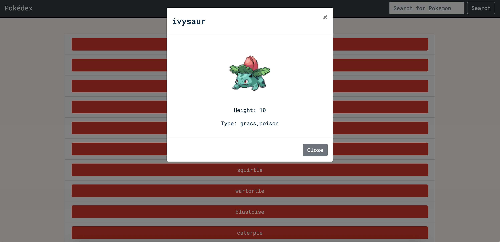

Pokédex Project
A responsive JavaScript Pokédex app that fetches data from an external API and displays detailed Pokémon information.
Project Overview
The Pokédex App is a JavaScript-based web application that allows users to browse and learn about Pokémon from the external PokéAPI. Built with HTML, CSS, and vanilla JavaScript, it demonstrates core front-end development skills — from data fetching to DOM manipulation — while maintaining a clean, responsive interface.
Goal / Purpose
The goal of this project was to practice foundational JavaScript programming, including asynchronous data handling and event-driven UI updates, while building a fully functional and visually appealing web application connected to an external API.
Challenges & Solutions
Challenge: Handling asynchronous data and displaying it efficiently while maintaining good user experience.
Solution: Implemented promise-based logic with async/await and added loading indicators to improve user experience during data fetch operations.
Lessons Learned
Through this project, I strengthened my understanding of JavaScript fundamentals, API integration, DOM manipulation, and the importance of writing modular, clean code. It also taught me how to balance functionality and design for a more polished final product.
Future Improvements
- Add a search bar and filtering options by type or ability.
- Implement dark mode for improved accessibility and visual appeal.
- Expand API integration to include Pokémon evolutions or abilities.